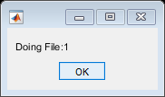

Contents
- ------------------------------Variables---------------------------
- -----------------------Parameters----------------
- ----------------------------------Read Mat Files----------------
- --------------------Read Parameters of csv files----------------
- ----------------------------Select your list if female or male----------------
- --------------------Define object IsSleeping---------------------
- --------------------------Define object IsHiding-----------------
- -----------------------------Define object IsArena ---------------------------
- ---------------------------Define object Time---------------------------------
- ------------------------Define object IsEatingDrinking-----------------------------
- Variables
- Read excel and matlab files for each nCSV
- Create a wait bar for control
- Clear the variables
- --------Found in the RFID selected data the mouse with 2 identities head or reabs--
- ---------------------------- Treat with the time-------------------------
- In the case is the first csv experiment don't consider the first 10000 data since this is the phase the mice are putting in the arena
- %% ----------Find is sleeping-------------------------
- %%
- Addition number of frame
- -------------------Treat spetial cases-----------------------
- ---------------- Calculate velocity -----------------
- -------------------Calculate distance to antenna-------------------------------
- ------------------------Correct the coordinates-----------------------------------
- ---------------------------------Interpolate the coordinates-------------------------------
- -----------------------------------Return repeated coordinates-------------------------------------------
- -------------------------------------------------In Arena velocity with approximate real time -----------------------------
- --------------------------------------EXCEPTIONS: The antenna position didn't correct the non-defined positions thus assign incorrect value------------
- ----------------------------Determine when it is stop,running, walking according to the velocity----------------------------
- ------------------------------------Determine if it is drinking or eating------------------------------------------
- -----------------------------Determine if it is inside or outside a given zone----------------------------
- -------------------------for further use create 2 auxiliary arrays----------------------
- ---------------------Save the locomotion parameters as a structure bring all the mice together----------------------
- --------------------Compute distance pairs---------------------------
- -----------------------Compute together--------------------------------------
- ---------------------------Define object together--------------------------------
- -------------------------------Calculating chasing-----------------------------
- CALCULATION OF CHASING BY INSERTING CORRECTED COORDINATES INTO GV MODULE
- CALCULATION OF CHASING BY INSERTING CORRECTED COORDINATES INTO SILVIA MODULE
- CALCULATION OF AVOIDANCE(mouse2 near mouse1 but mouse1 running away from mouse2)
- %% CALCULATION OF APPROACHING (mouse 1 approaches mouse 2 and the event finished)
- %------------Save as a mat file---------------------------
- -----------Change the format of the time as GV---------------------
- %% ---------------------------------Arrange the chasing events into an excel file AGREGAR LO QUE FALTA----------------------------
- --------------------SAVE SOCIAL EVENTS INTO EXCEL FILE-----------------
- Create a wait bar for control
- Clear the variables
- --------Found in the RFID selected data the mouse with 2 identities--
- ---------------------------- Treat with the time-------------------------
- In the case is the first csv experiment don't consider the first 10000 data since this is the phase the mice are putting in the arena
- ----------Find is sleeping-------------------------
- Addition number of frame
- %% In the case is the first csv experiment don't consider the first 10000 data since this is the phase the mice are putting in the arena
- ------------------ Save to excel file---------------------------------
- -------------------Treat spetial cases-----------------------
- -------------------Add to the actual time line the missing position from the excel file fm----------
- ---------------- Calculate velocity -----------------
- -------------------Calculate distance to antenna-------------------------------
- ------------------------Correct the coordinates-----------------------------------
- --------Add correction to non defined correction in the case of having the excel file with positions------
- %% --------Add correction to duplicate position with different detection antenna in the case of having the excel file with positions------
- ---------------------------------Interpolate the coordinates-------------------------------
- -----------------------------------Return repeated coordinates-------------------------------------------
- -------------------------for further use create 2 auxiliary arrays----------------------
- -------------------------------------------------In Arena velocity with approximate real time -----------------------------
- ----------------------------Determine when it is stop,running, walking according to the velocity----------------------------
- ------------------------------------Determine if it is drinking or eating------------------------------------------
- -----------------------------Determine if it is inside or outside a given zone----------------------------
- -------------------------for further use create 2 auxiliary arrays without repeats----------------------
- ---------------------Save the locomotion parameters as a structure bring all the mice together----------------------
- --------------------Compute distance pairs---------------------------
- --------------------Compute if the mice are together----------------------------
- ---------------------------Define object together--------------------------------
- -------------------------------Calculating chasing-----------------------------
- %% Auxiliary functions
- find the last numbers
- find RFID subset with the same date as the selected csv file
- Find the time near to the RFID data for each frame
- Arrange the coordinates in an horizontal way
- To calculate distance between pair of mice-If one is in the arena/hiding or sleeping box and vicevers or both sleeping is NAN no information
- ----------Clear variables---------
- -----------------------Function for saving Chasing, approachin/avoiding into an excel file------------------
- %% %% save into an excel file in a sheet called list of all chasing events
- Sort the data according to the days
- Save in another sheet data which appear as duplicate and it is not sure
- Save in another sheet all the parameters
- %% %% save into an excel file in a sheet called list of all avoiding events
- %% %% save into an excel file in a sheet called list of all approaching events
- -----------For removing duplicates from excel file------------------
function ManagerComputeAll( ~,~ )
------------------------------Variables---------------------------
global h clc clear MouseArray; clear ArrayX; %for x coord. clear ArrayY; %for y coord. clear ArrayXY; ArrayX=[]; ArrayY=[]; ArrayXY=[];
-----------------------Parameters----------------
Params=ParametersComputeAll;
Params =
exp_name: 'Exp59L'
mice_3_chips =
'0007158da0'' '000715ddce'' '''
'0007158e4a'' '000715e3d7'' '''
'000715e4fb'' '0007157c2e'' '''
'000715930b'' '000715c685'' '''
'000715a0a0'' '00071590fc'' '''
''' ''' '''
''' ''' '''
Aux =
'0007158da0'
Aux1 =
x8da0
Aux =
'0007158e4a'
Aux1 =
x8e4a
Aux =
'000715e4fb'
Aux1 =
xe4fb
Aux =
'000715930b'
Aux1 =
x930b
Aux =
'000715a0a0'
Aux1 =
xa0a0
Params =
exp_name: 'Exp59L'
DataDir: 'D:\Exp59\Data\Exp59LVideo'
resultsDir: 'D:\Exp59\Data\Exp59LResultsMatlab'
ForSomeFile: 0
ChoiceList: 'Males'
SaveDirectory: 'D:\Exp59\Data\Results'
mices: 'all'
miceType: [1x1 struct]
malesList: {1x5 cell}
femalesList: {1x0 cell}
mice_3_chips: {7x3 cell}
malesListRibs: {1x5 cell}
----------------------------------Read Mat Files----------------
--------------------Read Parameters of csv files----------------
CSVobj=FilesTreat;%use class FilesTreat CSVobj.directory=Params.DataDir; CSVobj.extension='.csv';
----------------------------Select your list if female or male----------------
switch Params.ChoiceList case 'Males' miceList=Params.malesList; miceList=strrep(miceList,'''',''); %for removing double quotes miceListRibs=Params.malesListRibs; miceListRibs=strrep(miceListRibs,'''',''); miceListRibsSecond=Params.malesListRibsSecond; %in the case a third chip was implanted if isempty(find(isnan([miceListRibsSecond{1:end}])==1)) miceListRibsSecond=strrep(miceListRibsSecond,'''',''); end case 'Females' miceList=Params.femalesList; miceList=strrep(miceList,'''',''); %for removing double quotes miceListRibs=Params.femalesListRibs; miceListRibs=strrep(miceListRibs,'''',''); miceListRibsSecond=Params.femalesListRibsSecond;%in the case a third chip was implanted if isempty(find(isnan([miceListRibsSecond{1:end}])==1)) miceListRibsSecond=strrep(miceListRibsSecond,'''',''); end end
--------------------Define object IsSleeping---------------------
IsSleepingobj=Sleeping; %use class Sleeping IsSleepingobj.AntennaCage=Params.AntennaCage; %number of antenna that detetect outside the arena IsSleepingobj.AntennaSideBox=Params.SideBoxAntenna;%number of antenna in the side box IsSleepingobj.SleepingCoord=Params.Coordinates.CoordSleepingCells; %coordinates of the sleeping cells if it is right or left
--------------------------Define object IsHiding-----------------
IsHidingobj=Hiding; %use class Hiding IsHidingobj.AntennaHidingBox=Params.AntennaHidingBox; IsHidingobj.HidingCoord=Params.Coordinates.HidingCoordinates; %every 4rows is a different hiding box
-----------------------------Define object IsArena ---------------------------
InArenaobj=Arena; InArenaobj. AntennaCoord=Params. AntennaCoord;%antenna position InArenaobj.TreshWalk=Params.TreshWalk;%walking threshold InArenaobj.TreshRun=Params.TreshRun;%running threshold
---------------------------Define object Time---------------------------------
Timeobj=TimeLine;
------------------------Define object IsEatingDrinking-----------------------------
IsEatingDrinkingobj=IsEatingDrinking; IsEatingDrinkingobj.VelocityThreshFood=Params.VelocityThreshFood; %velocity when is either eating or drinking IsEatingDrinkingobj.FoodCoordinates=Params.Coordinates.FoodCoordinates;%coordinates of eating IsEatingDrinkingobj.WaterCoordinates=Params.Coordinates.WaterCoordinates;%coordinates of drinking IsEatingDrinkingobj.radiusD=Params.radiusD; %radius around drinking
%%-----------Define object IsInZone----------------
IsInZoneobj=IsInZone;
IsInZoneobj.ZoneCoord=Params.ZoneCoord;
%%-------SELECT BETWEEN DOING ALL THE EXPERIMENT OR THE SELECTION OF SOME %%FILES--- switch Params.ForSomeFile case 0 %All the experiment
nCSV=CSVobj.NumFiles(CSVobj.ListFiles); %number of files of all the experiment for i=1:nCSV %loop over the original files
Variables
clear ArrayX; %for x coord. clear ArrayY; %for y coord. clear ArrayXY; ArrayX=[]; ArrayY=[]; ArrayXY=[]; clear Distance; clear VectorX; clear VectorY; clear VectorX1; clear VectorY1; Distance=[]; VectorX=[]; VectorY=[]; VectorX1=[]; VectorY1=[]; clear MouseArray;
Read excel and matlab files for each nCSV
CSVFile=CSVobj.ReadFilesAllCSV(CSVobj.ListFiles,i);%read each file CSVmiceIDs=CSVobj.miceIDs(CSVobj.ListFiles,i);%read the mice identities of each file-Now the order of the mice identity is the same for each file CSVFileName=CSVobj.FileName(CSVobj.ListFiles,i); % Read the mat file MatFileName=strcat(CSVFileName(1:strfind(CSVFileName,']')),'.mat'); load(MatFileName); %the structure is lococomotion
ListFiles =
126x1 struct array with fields:
name
date
bytes
isdir
datenum
ListFiles =
126x1 struct array with fields:
name
date
bytes
isdir
datenum
ListFiles =
126x1 struct array with fields:
name
date
bytes
isdir
datenum
hn=msgbox(strcat('Doing File:',num2str(i))) % %% %%-------- According to date select RFDI---------------- % ListFiles=CSVobj.ListFiles; % ListFiles(i).name % IndexFilesDates=findRFIDSubset(ListFiles(i).name,DateFiles); % % SelectedDataRFID=RFIDobj.ReadFilesAllDate(RFIDobj.ListFiles,IndexFilesDates);
hn =
Figure (Msgbox_ ) with properties:
Number: []
Name: ' '
Color: [0.9400 0.9400 0.9400]
Position: [657.5000 505.1667 125 52.2500]
Units: 'points'
Use GET to show all properties
 Create a wait bar for control
hbar = waitbar(0,'Please wait...'); % Rearrange the data according to the mice in a multidimensional array for j=1:length(miceList) %for each mouse
Clear the variables
clear AuxID clear Auxtime clear Auxantenna clear Iaux clear AuxIDn clear Auxtimen clear Auxantennan
%ONLY CONSIDER THE LAST NUMBERS SINCE SOMETIMES THE INITIAL ZERO DISSAPEAR Ind=cellfun(@(x)Find4last(x,miceList{j}(end-6:end)),CSVmiceIDs,'UniformOutput', false); MouseArray(2:length([CSVFile{1}])+1,1,j)=CSVFile{1}; %for date MouseArray(2:length([CSVFile{2}])+1,2,j)=strcat('''',[CSVFile{2}],''''); %for time if ~isempty(find(cell2mat(Ind)==1))
MouseArray(2:length([CSVFile{2}])+1,3,j)=num2cell(CSVFile{3+(find(cell2mat(Ind)==1)-1)*3}); %for x
MouseArray(2:length([CSVFile{2}])+1,4,j)=num2cell(CSVFile{4+(find(cell2mat(Ind)==1)-1)*3}); %for y
--------Found in the RFID selected data the mouse with 2 identities head or reabs--
%%----------Couple RFID with original time---------------------------------- AuxID=vertcat(SelectedDataRFID{:,1});%identity Auxtime=vertcat(SelectedDataRFID{:,3}); %time Auxantenna=vertcat(SelectedDataRFID{:,4}); %antenna if ~isempty(find(isnan([miceListRibsSecond{1:end}])==1))%for 2 chips Iaux=[find(strcmp(miceList(j),AuxID)==1); find(strcmp(miceListRibs(j),AuxID)==1)]; %find the identity of the respective mouse either with the ribs or head ID else %for 3 chips Iaux=[find(strcmp(miceList(j),AuxID)==1); find(strcmp(miceListRibs(j),AuxID)==1);find(strcmp(miceListRibsSecond(j),AuxID)==1)]; %find the identity of the respective mouse either with the chips on the ribs int 2 places or head ID end %for the specific mouse AuxIDn=AuxID(Iaux); Auxtimen=Auxtime(Iaux); Auxantennan=Auxantenna(Iaux); %search the similar time points for each frame in the csv file d=knnsearch(datenum(Auxtimen,'HH:MM:SS.FFF'),datenum(CSVFile{2},'HH:MM:SS.FFF')); %save rfid data in a mouse array MouseArray(2:length([CSVFile{2}])+1,5,j)=strcat('''',Auxtimen(d),''''); %RFID time MouseArray(2:length([CSVFile{2}])+1,6,j)=Auxantennan(d); %antenna rfid
---------------------------- Treat with the time-------------------------
Timeobj.FrameTime=[CSVFile{2}];
Timeobj.RFIDTime=Auxtimen(d);
DeltaTimeFrameRFID=abs(Timeobj.DeltaTime)*1000 ;%for getting in ms-- difference between rfid and the frame time
MouseArray(2:length([CSVFile{2}])+1,22,j)=num2cell(DeltaTimeFrameRFID);
%----------------define time object for sleeping----------------------
IsSleepingobj.TimeLapseFrameAntenna=DeltaTimeFrameRFID;
%------do frame time difference----------------
FrameTimeDif=abs(Timeobj.FrameTimeDif)*1000; %for getting in ms-difference with the same frame
MouseArray(2:length([CSVFile{2}])+1,23,j)=num2cell(FrameTimeDif);
In the case is the first csv experiment don't consider the first 10000 data since this is the phase the mice are putting in the arena
if i==1 I=[]; if cell2mat(MouseArray(1,3,j))==1e6 %only if the first is million I=find(cell2mat(MouseArray(:,3,j))~=1e6,1,'first'); MouseArray(1:I-1,6,j)={''}; end end
MouseArray(2:length([CSVFile{2}])+1,7,j)=AuxIDn(d); %mouse id
%% ----------Find is sleeping-------------------------
IsSleepingobj.CoordinateX=MouseArray(:,3,j);
IsSleepingobj.CoordinateY=MouseArray(:,4,j);
IsSleepingobj.AntennaNumber=Auxantennan(d);
MouseArray(2:length([CSVFile{2}])+1,8,j)=num2cell(IsSleepingobj.IsSleepingCorrections(IsSleepingobj.IsSleeping));
SleepingInterval=IsSleepingobj.IsSleepingInterval(IsSleepingobj.IsSleepingCorrections(IsSleepingobj.IsSleeping)); %sleeping interval
SleepingBeg= SleepingInterval(:,1);
SleepingEnd=SleepingInterval(:,2);
MouseArray(2:length(SleepingBeg)+1,17,j)=num2cell(SleepingBeg);
MouseArray(2:length(SleepingEnd)+1,18,j)=num2cell(SleepingEnd);
%find the number of the sleeping cage
MouseArray(2:length([CSVFile{2}])+1,9,j)=num2cell(IsSleepingobj.IsSleepingCage(SleepingInterval));
%arrange coordinates for sleeping
MouseArray(2:length([CSVFile{2}])+1,13:14,j)=num2cell(IsSleepingobj.IsSleepingCoord(SleepingInterval,IsSleepingobj.IsSleepingCage(SleepingInterval)));
%%-------------------------------- Find is hiding---------------------------------------- IsHidingobj.CoordinateX=MouseArray(:,13,j);%use the coordinates after the correction of sleeping IsHidingobj.CoordinateY=MouseArray(:,14,j); IsHidingobj.AntennaNumber=Auxantennan(d); MouseArray(2:length([CSVFile{2}])+1,10,j)=num2cell(IsHidingobj.IsHiding); %find hiding interval HidingInterval=IsHidingobj.IsHidingInterval(IsHidingobj.IsHiding); %sleeping interval HidingBeg= HidingInterval(:,1); HidingEnd=HidingInterval(:,2); MouseArray(2:length(HidingBeg)+1,19,j)=num2cell(HidingBeg); MouseArray(2:length(HidingEnd)+1,20,j)=num2cell(HidingEnd); %find the number of the hiding box MouseArray(2:length([CSVFile{2}])+1,11,j)=num2cell(IsHidingobj.IsHidingCage(HidingInterval)); %arrange coordinates for hiding MouseArray(2:length([CSVFile{2}])+1,15:16,j)=num2cell(IsHidingobj.IsHidingCoord(HidingInterval,IsHidingobj.IsHidingCage(HidingInterval)));
%%
%-----------------------------Find is in the arena------------------------------------- %find the interval for in arena InArenaobj.IsSleeping=MouseArray(:,8,j); InArenaobj.IsHiding=MouseArray(:,10,j); InArenaobj.AntennaNumber=Auxantennan(d); MouseArray(2:length([CSVFile{2}])+1,12,j)=num2cell(InArenaobj.InArena);
Addition number of frame
MouseArray(2:length([CSVFile{2}])+1,21,j)=num2cell([0:length([CSVFile{2}])-1]');
if i==1 %for the first csv file I=[]; if cell2mat(MouseArray(2,3,j))==1e6 %only if the first is million I=find(cell2mat(MouseArray(2:length([CSVFile{2}])+1,3,j))~=1e6,1,'first'); MouseArray(2:I-1,12,j)=num2cell(0); end end
else %if the mouse doesn't exit % MouseArray(:,3,j)={''}; MouseArray(2:length([CSVFile{2}])+1,3:21,j)=num2cell([0]); end % %
%%Coordinates after sleeping and hiding
ArrayX=[ArrayX,cell2mat(MouseArray(2:length([CSVFile{2}])+1,15,j))];
ArrayY=[ArrayY,cell2mat(MouseArray(2:length([CSVFile{2}])+1,16,j))];
ArrayXY=[ArrayXY,cell2mat(MouseArray(2:length([CSVFile{2}])+1,15:16,j))];
%Control of wait bar
waitbar(j/length(miceList));
end %NOTE:DECIDE IF TO SAVE THE MOUSE ARRAY MATRIX % Results.miceList=miceList; % Results.MouseArray=MouseArray; % %save(mat according the date) close(hbar)
-------------------Treat spetial cases-----------------------
%---------------Find repeated Frames for further use------------------- RepeatedFrames=CSVobj.RemoveDuplicFrame(ArrayXY); %----------------Identified in the arena duplicates and no video --- hbar=waitbar(0,'Second part wait') for j=1:length(miceList) clear InArenaNonDefined; clear InArenaDuplicates; Ind=cellfun(@(x)Find4last(x,miceList{j}(end-6:end)),CSVmiceIDs,'UniformOutput', false); if ~isempty(find(cell2mat(Ind)==1))
if ~isempty(find(cell2mat( MouseArray(2:length([CSVFile{2}])+1,12,j))==1)) InArenaNonDefined=InArenaobj.InArenaNonDefined(ArrayX,ArrayY,j,cell2mat(MouseArray(2:length([CSVFile{2}])+1,12,j))); InArenaDuplicates=InArenaobj.InArenaDuplic(ArrayX,ArrayY,j,length(miceList),cell2mat(MouseArray(2:length([CSVFile{2}])+1,12,j))); MouseArray(2:length([CSVFile{2}])+1,24,j)=num2cell(InArenaDuplicates); MouseArray(2:length([CSVFile{2}])+1,25,j)=num2cell(InArenaNonDefined); else MouseArray(2:length([CSVFile{2}])+1,24,j)=num2cell(0);%for cases it is inside the cage all along the file MouseArray(2:length([CSVFile{2}])+1,25,j)=num2cell(0); end
---------------- Calculate velocity -----------------
if ~isempty(find(cell2mat( MouseArray(2:length([CSVFile{2}])+1,12,j))==1)) InArenaVelocity=InArenaobj.InArenaVelocity(RepeatedFrames,ArrayX(:,j),ArrayY(:,j), (cell2mat(MouseArray(2:length([CSVFile{2}])+1,23,j)))); MouseArray(2:length([CSVFile{2}])+1,26,j)=num2cell(InArenaVelocity); else MouseArray(2:length([CSVFile{2}])+1,26,j)=num2cell(0); %for cases it is inside the cage all along the file end
-------------------Calculate distance to antenna-------------------------------
if ~isempty(find(cell2mat( MouseArray(2:length([CSVFile{2}])+1,12,j))==1)) InArenaAntennaDistance=InArenaobj.InArenaAntennaDistance(ArrayX(:,j),ArrayY(:,j),InArenaDuplicates,MouseArray(2:length([CSVFile{2}])+1,6,j)); MouseArray(2:length([CSVFile{2}])+1,27,j)=num2cell( InArenaAntennaDistance); else MouseArray(2:length([CSVFile{2}])+1,27,j)=num2cell(0); %for cases it is inside the cage all along the file end
------------------------Correct the coordinates-----------------------------------
if ~isempty(find(cell2mat( MouseArray(2:length([CSVFile{2}])+1,12,j))==1)) InArenaCorrectedCoord=InArenaobj.InArenaCorrectedCoord(ArrayX(:,j),ArrayY(:,j),RepeatedFrames, InArenaAntennaDistance,InArenaDuplicates,InArenaNonDefined,cell2mat(MouseArray(2:length([CSVFile{2}])+1,22,j)),MouseArray(2:length([CSVFile{2}])+1,6,j)); MouseArray(2:length([CSVFile{2}])+1,28,j)=num2cell(InArenaCorrectedCoord(:,1)); MouseArray(2:length([CSVFile{2}])+1,29,j)=num2cell(InArenaCorrectedCoord(:,2)); else MouseArray(2:length([CSVFile{2}])+1,28,j)=MouseArray(2:length([CSVFile{2}])+1,15,j); MouseArray(2:length([CSVFile{2}])+1,29,j)=MouseArray(2:length([CSVFile{2}])+1,16,j);%for cases it is inside the cage all along the file end
---------------------------------Interpolate the coordinates-------------------------------
TimeFrame=cell2mat(MouseArray(2:length([CSVFile{2}])+1,23,j));
if ~isempty(find(cell2mat( MouseArray(2:length([CSVFile{2}])+1,12,j))==1))
try %in the case the interpolation is not working giving error returned old coordinates
InArenaInterpolation=InArenaobj.InArenaInterpolation(RepeatedFrames,TimeFrame,InArenaCorrectedCoord(:,1),InArenaCorrectedCoord(:,2));
MouseArray(2:length([CSVFile{2}])+1,30,j)=num2cell(InArenaInterpolation(:,1));
MouseArray(2:length([CSVFile{2}])+1,31,j)=num2cell(InArenaInterpolation(:,2));
catch
MouseArray(2:length([CSVFile{2}])+1,30,j)=MouseArray(2:length([CSVFile{2}])+1,15,j);
MouseArray(2:length([CSVFile{2}])+1,31,j)=MouseArray(2:length([CSVFile{2}])+1,16,j);
end
else
MouseArray(2:length([CSVFile{2}])+1,30,j)=MouseArray(2:length([CSVFile{2}])+1,15,j);
MouseArray(2:length([CSVFile{2}])+1,31,j)=MouseArray(2:length([CSVFile{2}])+1,16,j); %for cases it is inside the cage all along the file
end
-----------------------------------Return repeated coordinates-------------------------------------------
if ~isempty(find(cell2mat( MouseArray(2:length([CSVFile{2}])+1,12,j))==1)) %verify that part of the time is in the arena - there csv files where the mouse was all time in the cage InArenaAddRepeats=InArenaobj.InArenaAddRepeats(RepeatedFrames,InArenaInterpolation(:,1),InArenaInterpolation(:,2)); MouseArray(2:length([CSVFile{2}])+1,32,j)=num2cell(InArenaAddRepeats(:,1)); MouseArray(2:length([CSVFile{2}])+1,33,j)=num2cell(InArenaAddRepeats(:,2)); else MouseArray(2:length([CSVFile{2}])+1,32,j)=MouseArray(2:length([CSVFile{2}])+1,15,j); MouseArray(2:length([CSVFile{2}])+1,33,j)=MouseArray(2:length([CSVFile{2}])+1,16,j); %for cases it is inside the cage all along the file end % In the case is the first csv experiment don't consider the first 10000 data since this is the phase the mice are putting in the arena if i==1 I=[]; if cell2mat(MouseArray(1,3,j))==1e6 %only if the first is million I=find(cell2mat(MouseArray(:,3,j))~=1e6,1,'first'); MouseArray(1:I-1,32,j)={''}; MouseArray(1:I-1,33,j)={''}; end end
-------------------------------------------------In Arena velocity with approximate real time -----------------------------
RealTime=78; %Real time is 78ms if ~isempty(find(cell2mat( MouseArray(2:length([CSVFile{2}])+1,12,j))==1)) InArenaVelocityR=InArenaobj.InArenaVelocityR(RepeatedFrames,InArenaAddRepeats(:,1),InArenaAddRepeats(:,2),RealTime,cell2mat( MouseArray(2:length([CSVFile{2}])+1,12,j))); MouseArray(2:length([CSVFile{2}])+1,34,j)=num2cell(InArenaVelocityR); else MouseArray(2:length([CSVFile{2}])+1,34,j)=num2cell(0);%for cases it is inside the cage all along the file end
--------------------------------------EXCEPTIONS: The antenna position didn't correct the non-defined positions thus assign incorrect value------------
clear Iexception1 clear Iexception2 %Consider the cases which are in the arena , not defined (1e6 coord %value) and negative or very big coordinates either x or y.Then in %arena is zero (we cannot say nothing Iexception1=(abs(cell2mat(MouseArray(2:length([CSVFile{2}])+1,32,j)))>2000 & cell2mat(MouseArray(2:length([CSVFile{2}])+1,12,j))==1 & cell2mat(MouseArray(2:length([CSVFile{2}])+1,25,j))==1); Iexception2=(abs(cell2mat(MouseArray(2:length([CSVFile{2}])+1,33,j)))>2000 & cell2mat(MouseArray(2:length([CSVFile{2}])+1,12,j))==1 & cell2mat(MouseArray(2:length([CSVFile{2}])+1,25,j))==1); if ~isempty(find(Iexception1==1)) MouseArray(Iexception1,12,j)=num2cell([0]); elseif ~isempty(find(Iexception2==1)) MouseArray(Iexception2,12,j)=num2cell([0]); end %-----------------------------------
----------------------------Determine when it is stop,running, walking according to the velocity----------------------------
InArenaVelocityRInterp=InArenaobj.InArenaVelocityRInterp(RepeatedFrames,cell2mat(MouseArray(2:length([CSVFile{2}])+1,34,j)),cell2mat(MouseArray(2:length([CSVFile{2}])+1,12,j)));
% InArenaActivity=InArenaobj.InArenaActivity(RepeatedFrames,cell2mat(MouseArray(2:length([CSVFile{2}])+1,34,j)),cell2mat(MouseArray(2:length([CSVFile{2}])+1,12,j)));
%InArenaVelocityAllFrames=InArenaobj.InArenaVelocityAllFrames(RepeatedFrames,cell2mat(MouseArray(2:length([CSVFile{2}])+1,34,j)));
InArenaActivity=InArenaobj.InArenaActivity(RepeatedFrames,InArenaVelocityRInterp,cell2mat(MouseArray(2:length([CSVFile{2}])+1,12,j)));
MouseArray(2:length([CSVFile{2}])+1,35,j)=num2cell(InArenaVelocityRInterp(:,1));%add to velocity interpolation where the velocity is zero
MouseArray(2:length([CSVFile{2}])+1,36,j)=num2cell(InArenaActivity(:,1)); %stop
MouseArray(2:length([CSVFile{2}])+1,37,j)=num2cell(InArenaActivity(:,2));%walking
MouseArray(2:length([CSVFile{2}])+1,38,j)=num2cell(InArenaActivity(:,3));%running
%---------------------------------------------------------------------------------------------
------------------------------------Determine if it is drinking or eating------------------------------------------
%First complete in all the repeated frames the velocities clear InArenaVelocityAllFrames; InArenaVelocityAllFrames=InArenaobj.InArenaVelocityAllFrames(RepeatedFrames,InArenaVelocityRInterp); IsEating=IsEatingDrinkingobj. IsEating(cell2mat(MouseArray(2:length([CSVFile{2}])+1,12,j)),cell2mat(MouseArray(2:length([CSVFile{2}])+1,32,j)),cell2mat(MouseArray(2:length([CSVFile{2}])+1,33,j)),InArenaVelocityAllFrames); IsDrinking=IsEatingDrinkingobj. IsDrinking(cell2mat(MouseArray(2:length([CSVFile{2}])+1,12,j)),cell2mat(MouseArray(2:length([CSVFile{2}])+1,32,j)),cell2mat(MouseArray(2:length([CSVFile{2}])+1,33,j)),InArenaVelocityAllFrames); MouseArray(2:length([CSVFile{2}])+1,39,j)=num2cell(IsEating);%eating MouseArray(2:length([CSVFile{2}])+1,40,j)=num2cell(IsDrinking);%drinking
-----------------------------Determine if it is inside or outside a given zone----------------------------
IsZone=IsInZoneobj.IsZone(cell2mat(MouseArray(2:length([CSVFile{2}])+1,12,j)),cell2mat(MouseArray(2:length([CSVFile{2}])+1,32,j)),cell2mat(MouseArray(2:length([CSVFile{2}])+1,33,j)));
MouseArray(2:length([CSVFile{2}])+1,41,j)=num2cell(IsZone(:,1));%inner zone
MouseArray(2:length([CSVFile{2}])+1,42,j)=num2cell(IsZone(:,2));%outside zone
-------------------------for further use create 2 auxiliary arrays----------------------
if ~isempty(find(cell2mat( MouseArray(2:length([CSVFile{2}])+1,12,j))==1)) InArenaAuxiliary=InArenaobj.InArenaAuxiliary(RepeatedFrames,InArenaAddRepeats(:,1),InArenaAddRepeats(:,2)); Distance(1:length(RepeatedFrames)-1,j)=InArenaAuxiliary(:,1); VectorX(1:length(RepeatedFrames)-1,j)=InArenaAuxiliary(:,2); %normalized vector VectorY(1:length(RepeatedFrames)-1,j)=InArenaAuxiliary(:,3); %normalized vector VectorX1(1:length(RepeatedFrames)-1,j)=InArenaAuxiliary(:,4); %not normalized vector VectorY1(1:length(RepeatedFrames)-1,j)=InArenaAuxiliary(:,5); %not normalized vector else Distance(1:length(RepeatedFrames)-1,j)=0; %in the case it is inside all the time VectorX(1:length(RepeatedFrames)-1,j)=0; VectorY(1:length(RepeatedFrames)-1,j)=0; VectorX1(1:length(RepeatedFrames)-1,j)=0; VectorY1(1:length(RepeatedFrames)-1,j)=0; end
else %if the mouse doesn't exit MouseArray(2:length([CSVFile{2}])+1,3:42,j)=num2cell([0]); end % waitbar(j/length(miceList)); end close(hbar)
hbar =
Figure (TMWWaitbar) with properties:
Number: []
Name: ''
Color: [0.9400 0.9400 0.9400]
Position: [585 376.5000 270 56.2500]
Units: 'points'
Use GET to show all properties
---------------------Save the locomotion parameters as a structure bring all the mice together----------------------
Locomotion.miceList=miceList; Large=length(MouseArray(:,12,1)); Locomotion.isInArena=reshape(cell2mat(MouseArray(2:Large,12,:)),Large-1,length(miceList)); Locomotion.TrajectoryX=reshape(cell2mat(MouseArray(2:Large,32,:)),Large-1,length(miceList)); %coord after corrections with repeats Locomotion.TrajectoryY=reshape(cell2mat(MouseArray(2:Large,33,:)),Large-1,length(miceList)); %coord after corrections with repeats % Locomotion.Velocity=reshape(cell2mat(MouseArray(2:Large,34,:)),Large-1,length(miceList)); %velocity of the real frames Locomotion.Velocity=reshape(cell2mat(MouseArray(2:Large,35,:)),Large-1,length(miceList)); %velocity of the real frames by including interpolation of zero velocity points inside the arena Locomotion.InArenaDuplicates=reshape(cell2mat(MouseArray(2:Large,24,:)),Large-1,length(miceList)); %In arena duplicates Locomotion.RepeatedFrames=RepeatedFrames; Locomotion.ExperimentalTime=MouseArray(2:Large,2,1); %take only one mouse since it is the same time for everything. Locomotion.VectorX=VectorX; %without repeats Locomotion.VectorY=VectorY; %without repeats Locomotion.Distance=Distance;%without repeats Locomotion.VectorX1=VectorX1; %without repeats no normalized Locomotion.VectorY1=VectorY1; %no normalized Locomotion.isStop=reshape(cell2mat(MouseArray(2:Large,36,:)),Large-1,length(miceList)); Locomotion.isWalking=reshape(cell2mat(MouseArray(2:Large,37,:)),Large-1,length(miceList)); Locomotion.isRunning=reshape(cell2mat(MouseArray(2:Large,38,:)),Large-1,length(miceList)); Locomotion.IsEating=reshape(cell2mat(MouseArray(2:Large,39,:)),Large-1,length(miceList)); Locomotion.IsDrinking=reshape(cell2mat(MouseArray(2:Large,40,:)),Large-1,length(miceList)); Locomotion.IsSleeping=reshape(cell2mat(MouseArray(2:Large,8,:)),Large-1,length(miceList)); Locomotion.IsHiding=reshape(cell2mat(MouseArray(2:Large,10,:)),Large-1,length(miceList)); Locomotion.SleepingBox=reshape(cell2mat(MouseArray(2:Large,9,:)),Large-1,length(miceList)); Locomotion.HidingBox=reshape(cell2mat(MouseArray(2:Large,11,:)),Large-1,length(miceList)); Locomotion.IsInsideZone=reshape(cell2mat(MouseArray(2:Large,41,:)),Large-1,length(miceList)); Locomotion.IsOutsideZone=reshape(cell2mat(MouseArray(2:Large,42,:)),Large-1,length(miceList));
--------------------Compute distance pairs---------------------------
DistancePairs=computeDistancePairsGV(Locomotion.TrajectoryX,Locomotion.TrajectoryY,Locomotion.isInArena,Locomotion.IsHiding,Locomotion.RepeatedFrames); Locomotion.DistancePairs=DistancePairs;
-----------------------Compute together--------------------------------------
---------------------------Define object together--------------------------------
Togetherobj=Together;
Togetherobj.DistanceToBeTogether=Params.DistanceToBeTogheter; %distance to be considered together in general is 10cm
Togetherobj.numOfMice=length(Locomotion.miceList);
TogetherCalc=Togetherobj.TogetherCalc(Locomotion.TrajectoryX,Locomotion.TrajectoryY,Locomotion.isInArena,Locomotion.RepeatedFrames);
Locomotion.TimesTogether=TogetherCalc(1,length(Locomotion.miceList)+1);
Locomotion.TogetherAll=TogetherCalc(1,1:length(Locomotion.miceList));
hbar =
Figure (TMWWaitbar) with properties:
Number: []
Name: ''
Color: [0.9400 0.9400 0.9400]
Position: [585 376.5000 270 56.2500]
Units: 'points'
Use GET to show all properties
-------------------------------Calculating chasing-----------------------------
%---------Create chasing object------------------- %All the units are in mm Chasingobj=Chasing; Chasingobj.numOfMice=length(Locomotion.miceList); Chasingobj.Dist_tresh1=300; Chasingobj.Velocity_Tresh=0.5; Chasingobj.PathTresh=600; Chasingobj.Dist_tresh2=200; % Chasingobj.AngleMaximum1=Params.AngleMaximum1; %This is the maximum angle, which is allowed, between the line joining the mice 1-2 and the vector of movement of mouse 1. Chasingobj.AngleMaximum2=Params.AngleMaximum2; %This is the maximum angle, which is allowed, between the vector of movement of mouse 1 and mouse 2. Chasingobj.MinimumPath=Params.editpar1; %This is the minimum path recording to be considered as chasing. Chasingobj.GapPath=Params.editpar2; %This is the maximum distance allow to finish the chasing mm Chasingobj.ThreshVelocity=Params.editpar3; %20-10 cm/sec Chasingobj.GapFrames=Params.editpar4; %maximum number of frames to be allowed to be a gap Chasingobj.GapPathEnd=Params.editpar5; %the end of the frame Chasingobj.GapFramesS=Params.editpar6; %maximum number of frames to be allowed to be a gap in small frames Chasingobj.GapPathEndS=Params.editpar7; % condition of the end of the frame in small frames % Chasingobj.AngleMaximum1=20; %This is the maximum angle, which is allowed, between the line joining the mice 1-2 and the vector of movement of mouse 1. % Chasingobj.AngleMaximum2=20; %This is the maximum angle, which is allowed, between the vector of movement of mouse 1 and mouse 2. % Chasingobj.MinimumPath=200; %This is the minimum path recording to be considered as chasing. % Chasingobj.GapPath=400; %This is the maximum distance allow to finish the chasing mm % Chasingobj.ThreshVelocity=10; %20-10 cm/sec % Chasingobj.GapFrames=100; %maximum number of frames to be allowed to be a gap % Chasingobj.GapPathEnd=200; %the end of the frame %------------------------- TrajectoryX=Locomotion.TrajectoryX(Locomotion.RepeatedFrames,:); TrajectoryY=Locomotion.TrajectoryY(Locomotion.RepeatedFrames,:); Velocity=Locomotion.Velocity(Locomotion.RepeatedFrames,:);
CALCULATION OF CHASING BY INSERTING CORRECTED COORDINATES INTO GV MODULE
% ChasingCal=Chasingobj.ChasingCal(TrajectoryX,TrajectoryY,Locomotion.Velocity(Locomotion.RepeatedFrames,:),Locomotion.isInArena(Locomotion.RepeatedFrames,:),Locomotion.VectorX,Locomotion.VectorY,Locomotion.Distance,Locomotion.ExperimentalTime(Locomotion.RepeatedFrames,:));
CALCULATION OF CHASING BY INSERTING CORRECTED COORDINATES INTO SILVIA MODULE
ChasingCalvs2=Chasingobj.ChasingCalvs2(TrajectoryX,TrajectoryY,Locomotion.VectorX1,Locomotion.VectorY1,Locomotion.isInArena(Locomotion.RepeatedFrames,:),Locomotion.RepeatedFrames,Velocity,Locomotion.InArenaDuplicates(Locomotion.RepeatedFrames,:) );
hbar =
Figure (TMWWaitbar) with properties:
Number: []
Name: ''
Color: [0.9400 0.9400 0.9400]
Position: [585 376.5000 270 56.2500]
Units: 'points'
Use GET to show all properties
% Locomotion.ChasingAll=ChasingCal(:,1:Chasingobj.numOfMice); % Locomotion.ChasedAll=ChasingCal(:,Chasingobj.numOfMice+1:2*Chasingobj.numOfMice); % Locomotion.MoveTogether=ChasingCal(:,2*Chasingobj.numOfMice+1:3*Chasingobj.numOfMice); Locomotion.ChasingAll=ChasingCalvs2(:,1:Chasingobj.numOfMice); Locomotion.BeingChasingAll=ChasingCalvs2(:,Chasingobj.numOfMice+1:Chasingobj.numOfMice+Chasingobj.numOfMice); Locomotion.TimeWithoutRepeats=Locomotion.ExperimentalTime(Locomotion.RepeatedFrames,:); hhh=msgbox('Chasing analysis finish') close(hhh)
hhh =
Figure (Msgbox_ ) with properties:
Number: []
Name: ' '
Color: [0.9400 0.9400 0.9400]
Position: [657.5000 505.1667 125 52.2500]
Units: 'points'
Use GET to show all properties
CALCULATION OF AVOIDANCE(mouse2 near mouse1 but mouse1 running away from mouse2)
% Create Avoidance object Avoidanceobj=Avoidance; Avoidanceobj.numOfMice=length(Locomotion.miceList); Avoidanceobj.Distance_thresh= Params.Distance_thresh_For_Avoidance; Avoidanceobj.Dist_thresh_Fine_Tuning=Params.Dist_thresh_Fine_Tuning_For_Avoidance; %dist for fine tuning according GV is 100mm Avoidanceobj.velThr=Params.Velocity_For_Avoidance;% according gv 35cm/sec Avoidanceobj.R=Params.Radius_Within_Avoidance;% according gv 30 cm
AvoidanceCal=Avoidanceobj.AvoidanceCal(TrajectoryX,TrajectoryY,Velocity,Locomotion.isInArena(Locomotion.RepeatedFrames,:),Locomotion.RepeatedFrames)
hbar =
Figure (TMWWaitbar) with properties:
Number: []
Name: ''
Color: [0.9400 0.9400 0.9400]
Position: [585 376.5000 270 56.2500]
Units: 'points'
Use GET to show all properties
AvoidanceCal =
[] [] [] [] []
Locomotion.avoiding=AvoidanceCal;
hhhh=msgbox('Avoidance calculation was finished')
close(hhhh)
hhhh =
Figure (Msgbox_ ) with properties:
Number: []
Name: ' '
Color: [0.9400 0.9400 0.9400]
Position: [647 505.1667 146 52.2500]
Units: 'points'
Use GET to show all properties
%% CALCULATION OF APPROACHING (mouse 1 approaches mouse 2 and the event finished)
% Create Approaching object Approachingobj=Approaching; Approachingobj.numOfMice=length(Locomotion.miceList); Approachingobj.Distance_thresh= Params.Distance_thresh_For_Approaching; %According to GV this is 40cm Approachingobj.distTr=Params.Distance_Thresh_For_Approaching_Fine_Tuning;%According to GV this is 10cm Approachingobj.CorrelFactor=Params.CorrFactor_between_mice_For_Approaching; %According to GV this is 0.3 Approachingobj.velTr2=Params.Velocity_Thresh_To_beSamePlace_For_Approaching; %According to GV this is 25cm/sec
ApproachingCal=Approachingobj.ApproachingCal(TrajectoryX,TrajectoryY,Velocity,Locomotion.isInArena(Locomotion.RepeatedFrames,:),Locomotion.RepeatedFrames,Locomotion.VectorX,Locomotion.VectorY) % %% Locomotion.ApproachingAll=ApproachingCal(:,1:Approachingobj.numOfMice); Locomotion.BeingApproachingAll=ApproachingCal(:,Approachingobj.numOfMice+1:Approachingobj.numOfMice+Approachingobj.numOfMice); hhhh=msgbox('Approaching calculation was finished') close(hhhh)
hbar =
Figure (TMWWaitbar) with properties:
Number: []
Name: ''
Color: [0.9400 0.9400 0.9400]
Position: [585 376.5000 270 56.2500]
Units: 'points'
Use GET to show all properties
ApproachingCal =
[] [] [] [] [] [] [] [] [] []
hhhh =
Figure (Msgbox_ ) with properties:
Number: []
Name: ' '
Color: [0.9400 0.9400 0.9400]
Position: [643.2500 505.1667 153.5000 52.2500]
Units: 'points'
Use GET to show all properties
%------------Save as a mat file---------------------------
Namef=char(ListFiles(i).name);
filename1=strcat(Namef(1:end-4),'.mat');
Undefined variable "ListFiles" or class "ListFiles". Error in ManagerComputeAll (line 648) Namef=char(ListFiles(i).name);
-----------Change the format of the time as GV---------------------
Indexes=strfind(filename1,'-'); %the first one gives the date date1=strrep(filename1(1:Indexes(1)-1),'.','_'); Indexes1a=strfind(filename1,'['); %the initial time Indexes1b=strfind(filename1,']'); %the final time time1=filename1(Indexes1a+1:Indexes1b-1); Indexes2=strfind(time1,'.'); time1([Indexes2(1),Indexes2(2),Indexes2(4),Indexes2(5)])='_'; filename1=strcat(date1,'_',time1,'.mat');
mkdir(Params.resultsDir); filename1=strcat(Params.resultsDir,'\',filename1);%where are the matlab results save(filename1,'Locomotion');
close(hn)
end
ListFiles =
126x1 struct array with fields:
name
date
bytes
isdir
datenum
%% ---------------------------------Arrange the chasing events into an excel file AGREGAR LO QUE FALTA----------------------------
[AllChasing,AllAvoiding,AllApproaching]=GetEvents;
--------------------SAVE SOCIAL EVENTS INTO EXCEL FILE-----------------
behaviour=0; for behaviour=1:3 switch(behaviour) case 1 %for chasing if ~isempty(AllChasing) SaveSocialData(AllChasing,behaviour,Params.SaveDirectory,Params.exp_name,Chasingobj) end case 2 %for avoiding if ~isempty(AllAvoiding) SaveSocialData(AllAvoiding,behaviour,Params.SaveDirectory,Params.exp_name,Avoidanceobj) end case 3 %for approaching if ~isempty(AllApproaching) SaveSocialData(AllApproaching,behaviour,Params.SaveDirectory,Params.exp_name,Approachingobj) end end end msgbox('Finish all')
%END MULTIPLE FILES %%BEGIN FOR SELECTED FILES
case 1 %take single files from the list for further analysis index_selected = get(h.listAllRFID,'Value'); %Select the csv files to work list = cellstr(get(h.listAllRFID,'String')); item_selected = list(index_selected,1); % Convert from cell array to string nCSV=length(item_selected); for i=1:nCSV %loop over the original files
clear ArrayX; %for x coord. clear ArrayY; %for y coord. clear ArrayXY; clear ArrayRFID; ArrayX=[]; ArrayY=[]; ArrayXY=[]; ArrayRFID=[]; clear Distance; clear VectorX; clear VectorY; clear VectorX1; clear VectorY1; Distance=[]; VectorX=[]; VectorY=[]; VectorX1=[]; VectorY1=[]; clear MouseArray ; CSVFile=CSVobj.ReadFilesAllCSV(CSVobj.ListFiles,index_selected(i));%Use Files Treat to read this file CSVmiceIDs=CSVobj.miceIDs(CSVobj.ListFiles,index_selected(i)); %%-------- According to date select RFDI---------------- IndexFilesDates=findRFIDSubset(item_selected(i),DateFiles); SelectedDataRFID=RFIDobj.ReadFilesAllDate(RFIDobj.ListFiles,IndexFilesDates);
Create a wait bar for control
hbar = waitbar(0,'Please wait...'); % Rearrange the data according to the mice in a multidimensional array for j=1:length(miceList) %for each mouse
Clear the variables
clear AuxID clear Auxtime clear Auxantenna clear Iaux clear AuxIDn clear Auxtimen clear Auxantennan
%ONLY CONSIDER THE LAST NUMBERS SINCE SOMETIMES THE INITIAL ZERO DISSAPEAR Ind=cellfun(@(x)Find4last(x,miceList{j}(end-6:end)),CSVmiceIDs,'UniformOutput', false); MouseArray(2:length([CSVFile{1}])+1,1,j)=CSVFile{1}; %for date MouseArray(2:length([CSVFile{2}])+1,2,j)=strcat('''',[CSVFile{2}],''''); %for time if ~isempty(find(cell2mat(Ind)==1))
MouseArray(2:length([CSVFile{2}])+1,3,j)=num2cell(CSVFile{3+(find(cell2mat(Ind)==1)-1)*3}); %for x
MouseArray(2:length([CSVFile{2}])+1,4,j)=num2cell(CSVFile{4+(find(cell2mat(Ind)==1)-1)*3}); %for y
--------Found in the RFID selected data the mouse with 2 identities--
AuxID=vertcat(SelectedDataRFID{:,1});%identity
Auxtime=vertcat(SelectedDataRFID{:,3}); %time
Auxantenna=vertcat(SelectedDataRFID{:,4}); %antenna
Iaux=[find(strcmp(miceList(j),AuxID)==1); find(strcmp(miceListRibs(j),AuxID)==1)]; %find the identity of the respective mouse either with the ribs or head ID
%for the specific mouse
AuxIDn=AuxID(Iaux);
Auxtimen=Auxtime(Iaux);
Auxantennan=Auxantenna(Iaux);
%search the similar time points for each frame in the csv file
d=knnsearch(datenum(Auxtimen,'HH:MM:SS.FFF'),datenum(CSVFile{2},'HH:MM:SS.FFF'));
%save rfid data in a mouse array
MouseArray(2:length([CSVFile{2}])+1,5,j)=strcat('''',Auxtimen(d),''''); %RFID time
MouseArray(2:length([CSVFile{2}])+1,6,j)=Auxantennan(d); %antenna rfid
---------------------------- Treat with the time-------------------------
Timeobj.FrameTime=[CSVFile{2}];
Timeobj.RFIDTime=Auxtimen(d);
DeltaTimeFrameRFID=abs(Timeobj.DeltaTime)*1000 ;%for getting in ms
MouseArray(2:length([CSVFile{2}])+1,22,j)=num2cell(DeltaTimeFrameRFID);
%----------------define time object for sleeping----------------------
IsSleepingobj.TimeLapseFrameAntenna=DeltaTimeFrameRFID;
%------do frame time difference----------------
FrameTimeDif=abs(Timeobj.FrameTimeDif)*1000; %for getting in ms
MouseArray(2:length([CSVFile{2}])+1,23,j)=num2cell(FrameTimeDif);
In the case is the first csv experiment don't consider the first 10000 data since this is the phase the mice are putting in the arena
if index_selected==1 I=[]; if cell2mat(MouseArray(1,3,j))==1e6 %only if the first is million I=find(cell2mat(MouseArray(:,3,j))~=1e6,1,'first'); MouseArray(1:I-1,6,j)={''}; end end
MouseArray(2:length([CSVFile{2}])+1,7,j)=AuxIDn(d); %mouse id
----------Find is sleeping-------------------------
IsSleepingobj.CoordinateX=MouseArray(:,3,j);
IsSleepingobj.CoordinateY=MouseArray(:,4,j);
IsSleepingobj.AntennaNumber=Auxantennan(d);
MouseArray(2:length([CSVFile{2}])+1,8,j)=num2cell(IsSleepingobj.IsSleepingCorrections(IsSleepingobj.IsSleeping));
SleepingInterval=IsSleepingobj.IsSleepingInterval(IsSleepingobj.IsSleepingCorrections(IsSleepingobj.IsSleeping)); %sleeping interval
SleepingBeg= SleepingInterval(:,1);
SleepingEnd=SleepingInterval(:,2);
MouseArray(2:length(SleepingBeg)+1,17,j)=num2cell(SleepingBeg);
MouseArray(2:length(SleepingEnd)+1,18,j)=num2cell(SleepingEnd);
%find the number of the sleeping cage
MouseArray(2:length([CSVFile{2}])+1,9,j)=num2cell(IsSleepingobj.IsSleepingCage(SleepingInterval));
%arrange coordinates for sleeping
MouseArray(2:length([CSVFile{2}])+1,13:14,j)=num2cell(IsSleepingobj.IsSleepingCoord(SleepingInterval,IsSleepingobj.IsSleepingCage(SleepingInterval)));
%%-------------------------------- Find is hiding---------------------------------------- IsHidingobj.CoordinateX=MouseArray(:,13,j);%use the coordinates after the correction of sleeping IsHidingobj.CoordinateY=MouseArray(:,14,j); IsHidingobj.AntennaNumber=Auxantennan(d); MouseArray(2:length([CSVFile{2}])+1,10,j)=num2cell(IsHidingobj.IsHiding); %find hiding interval HidingInterval=IsHidingobj.IsHidingInterval(IsHidingobj.IsHiding); %sleeping interval HidingBeg= HidingInterval(:,1); HidingEnd=HidingInterval(:,2); MouseArray(2:length(HidingBeg)+1,19,j)=num2cell(HidingBeg); MouseArray(2:length(HidingEnd)+1,20,j)=num2cell(HidingEnd); %find the number of the hiding box MouseArray(2:length([CSVFile{2}])+1,11,j)=num2cell(IsHidingobj.IsHidingCage(HidingInterval)); %arrange coordinates for hiding MouseArray(2:length([CSVFile{2}])+1,15:16,j)=num2cell(IsHidingobj.IsHidingCoord(HidingInterval,IsHidingobj.IsHidingCage(HidingInterval)));
%-----------------------------Find is in the arena------------------------------------- %find the interval for in arena InArenaobj.IsSleeping=MouseArray(:,8,j); InArenaobj.IsHiding=MouseArray(:,10,j); InArenaobj.AntennaNumber=Auxantennan(d); MouseArray(2:length([CSVFile{2}])+1,12,j)=num2cell(InArenaobj.InArena);
Addition number of frame
MouseArray(2:length([CSVFile{2}])+1,21,j)=num2cell([0:length([CSVFile{2}])-1]');
%% In the case is the first csv experiment don't consider the first 10000 data since this is the phase the mice are putting in the arena
if index_selected==1 I=[]; if cell2mat(MouseArray(2,3,j))==1e6 %only if the first is million I=find(cell2mat(MouseArray(2:length([CSVFile{2}])+1,3,j))~=1e6,1,'first'); MouseArray(2:I-1,12,j)=num2cell(0); end end
else %if the mouse doesn't exit %MouseArray(:,3,j)={''}; MouseArray(:,:,j)={'0'}; end
------------------ Save to excel file---------------------------------
Titles
MouseArray(1,1,j)={'Experiment Date'};
MouseArray(1,2,j)={'Experiment Time'};
MouseArray(1,3,j)={'Original x coord.'};
MouseArray(1,4,j)={'Original y coord.'};
MouseArray(1,5,j)={'RFID Time'};
MouseArray(1,6,j)={'Number RFID antenna'};
MouseArray(1,7,j)={'RFID mouse identity'};
MouseArray(1,8,j)={'Is Sleeping'};
MouseArray(1,9,j)={'Sleeping Box'};
MouseArray(1,10,j)={'Is Hiding'};
MouseArray(1,11,j)={'Hiding Box'};
MouseArray(1,12,j)={'In Arena'};
MouseArray(1,13,j)={'Coord x with Sleeping'};
MouseArray(1,14,j)={'Coord y with Sleeping'};
MouseArray(1,15,j)={'Coord x with Hiding/Sleeping'};
MouseArray(1,16,j)={'Coord y with Hiding/Sleeping'};
MouseArray(1,17,j)={'Beg.Int.Sleeping'};
MouseArray(1,18,j)={'End Int.Sleeping'};
MouseArray(1,19,j)={'Beg.Int.Hiding'};
MouseArray(1,20,j)={'End.Int.Hiding'};
MouseArray(1,21,j)={'Number of video frame'};
MouseArray(1,22,j)={'Elapsed time between Frame and RFID (msec)'};
MouseArray(1,23,j)={'Elapsed time between frames (msec)'};
MouseArray(1,24,j)={'Duplicates in coord. at arena'};
MouseArray(1,25,j)={'Non defined coord. at arena'};
MouseArray(1,26,j)={'Velocity without repeats in (cm/sec)'};
MouseArray(1,27,j)={'Distance from antenna for duplicates (mm)'};
MouseArray(1,28,j)={'X corrected coord.'};
MouseArray(1,29,j)={'Y corrected coord.'};
MouseArray(1,30,j)={'X interpolated coord.'};
MouseArray(1,31,j)={'Y interpolated coord.'};
MouseArray(1,32,j)={'X interpolated coord. with repeats'};
MouseArray(1,33,j)={'Y interpolated coord. with repeats'};
MouseArray(1,34,j)={'In Arena velocity with real time between frames'};
MouseArray(1,35,j)={'In Arena velocity with real time between frames with interpol.'};
MouseArray(1,36,j)={'Is stop'};
MouseArray(1,37,j)={'Is walking'};
MouseArray(1,38,j)={'Is running'};
MouseArray(1,39,j)={'Is eating'};
MouseArray(1,40,j)={'Is drinking'};
MouseArray(1,41,j)={'Is in zone inside'};
MouseArray(1,42,j)={'Is in zone outside'};
%
ArrayX=[ArrayX,cell2mat(MouseArray(2:length([CSVFile{2}])+1,15,j))];
ArrayY=[ArrayY,cell2mat(MouseArray(2:length([CSVFile{2}])+1,16,j))];
ArrayXY=[ArrayXY,cell2mat(MouseArray(2:length([CSVFile{2}])+1,15:16,j))];
ArrayRFID=[ArrayRFID,(MouseArray(2:length([CSVFile{2}])+1,6,j))];
% sheet=char(miceList(j)); % Namef=char(item_selected(i)); % filename=strcat(Namef(1:end-4),'LocomotionResults','.xlsx'); % filename=strrep(filename,'[','('); % filename=strrep(filename,']',')'); % filename=strcat(Params.SaveDirectory,'\',filename); % xlswrite(filename,MouseArray(:,:,j),sheet); %Control of wait bar waitbar(j/length(miceList));
end
close(hbar)
-------------------Treat spetial cases-----------------------
%---------------Find repeated Frames for further use------------------- % RepeatedFrames=CSVobj.RemoveDuplicFrame([CSVFile{3:end}]); RepeatedFrames=CSVobj.RemoveDuplicFrame(ArrayXY);
-------------------Add to the actual time line the missing position from the excel file fm----------
if Params.ForMissingPosition==1 %if the csv file of missing positions is considered % clear CSVMissingFile; MissingWhiteobj.Number_Mouse=length(miceList); % TimeMissingFile=CSVMissingobj.ReadTimeMissingPosition(CSVobj.ListFiles,index_selected(i),length(miceList));%Read the csv file of missing positions CoordMissingFile=CSVMissingobj.ReadPositionMissingPosition(CSVobj.ListFiles,index_selected(i),length(miceList)); % Timeline=[CSVFile{2}]; % %Add missing positions to the correct mouse [ArrayXMissing,ArrayYMissing]=MissingWhiteobj.FindMissingWhite(Timeline,RepeatedFrames,TimeMissingFile,CoordMissingFile(:,3:end)); % % % end
%----------------Identified in the arena duplicates and no video --- hbar=waitbar(0,'Second part wait') for j=1:length(miceList) clear InArenaNonDefined; clear InArenaDuplicates; clear InArenaAuxiliary; Ind=cellfun(@(x)Find4last(x,miceList{j}(end-6:end)),CSVmiceIDs,'UniformOutput', false); if ~isempty(find(cell2mat(Ind)==1))
if ~isempty(find(cell2mat( MouseArray(2:length([CSVFile{2}])+1,12,j))==1)) InArenaNonDefined=InArenaobj.InArenaNonDefined(ArrayX,ArrayY,j,cell2mat(MouseArray(2:length([CSVFile{2}])+1,12,j))); InArenaDuplicates=InArenaobj.InArenaDuplic(ArrayX,ArrayY,j,length(miceList),cell2mat(MouseArray(2:length([CSVFile{2}])+1,12,j))); %InArenaDuplicates=InArenaobj.InArenaDuplic(ArrayX,ArrayY,j,length( CSVmiceIDs),cell2mat(MouseArray(2:length([CSVFile{2}])+1,12,j))); MouseArray(2:length([CSVFile{2}])+1,24,j)=num2cell(InArenaDuplicates); MouseArray(2:length([CSVFile{2}])+1,25,j)=num2cell(InArenaNonDefined); else MouseArray(2:length([CSVFile{2}])+1,24,j)=num2cell(0);%for cases it is inside the cage all along the file MouseArray(2:length([CSVFile{2}])+1,25,j)=num2cell(0); end
---------------- Calculate velocity -----------------
if ~isempty(find(cell2mat( MouseArray(2:length([CSVFile{2}])+1,12,j))==1)) InArenaVelocity=InArenaobj.InArenaVelocity(RepeatedFrames,ArrayX(:,j),ArrayY(:,j), (cell2mat(MouseArray(2:length([CSVFile{2}])+1,23,j)))); MouseArray(2:length([CSVFile{2}])+1,26,j)=num2cell(InArenaVelocity); else MouseArray(2:length([CSVFile{2}])+1,26,j)=num2cell(0); %for cases it is inside the cage all along the file end
-------------------Calculate distance to antenna-------------------------------
InArena.AntennaNumber= MouseArray(2:length([CSVFile{2}])+1,6,j);if ~isempty(find(cell2mat( MouseArray(2:length([CSVFile{2}])+1,12,j))==1)) InArenaAntennaDistance=InArenaobj.InArenaAntennaDistance(ArrayX(:,j),ArrayY(:,j),InArenaDuplicates,MouseArray(2:length([CSVFile{2}])+1,6,j)); MouseArray(2:length([CSVFile{2}])+1,27,j)=num2cell( InArenaAntennaDistance); else MouseArray(2:length([CSVFile{2}])+1,27,j)=num2cell(0); %for cases it is inside the cage all along the file end
------------------------Correct the coordinates-----------------------------------
if ~isempty(find(cell2mat( MouseArray(2:length([CSVFile{2}])+1,12,j))==1))
j
--------Add correction to non defined correction in the case of having the excel file with positions------
if Params.ForMissingPosition==1 %if the csv file of missing positions is considered InArenaCorrectedNonDefinedCoord=InArenaobj.InArenaCorrectedNonDefinedCoord(ArrayX(:,j),ArrayY(:,j),j,RepeatedFrames,InArenaNonDefined,ArrayRFID,ArrayXMissing,ArrayYMissing); MouseArray(2:length([CSVFile{2}])+1,28,j)=num2cell(InArenaCorrectedNonDefinedCoord(:,1)); MouseArray(2:length([CSVFile{2}])+1,29,j)=num2cell(InArenaCorrectedNonDefinedCoord(:,2)); InArenaNonDefined=InArenaCorrectedNonDefinedCoord(:,3); MouseArray(2:length([CSVFile{2}])+1,25,j)=num2cell(InArenaNonDefined);%readjust values ArrayX(:,j)=InArenaCorrectedNonDefinedCoord(:,1); ArrayY(:,j)=InArenaCorrectedNonDefinedCoord(:,2); end
%% --------Add correction to duplicate position with different detection antenna in the case of having the excel file with positions------
if Params.ForMissingPosition==1 %if the csv file of missing positions is considered
InArenaCorrectedDuplicated=InArenaobj.InArenaCorrectedNonDefinedCoord(ArrayX(:,j),ArrayY(:,j),j,RepeatedFrames,InArenaDuplicates,ArrayRFID,ArrayXMissing,ArrayYMissing);
MouseArray(2:length([CSVFile{2}])+1,28,j)=num2cell(InArenaCorrectedDuplicated(:,1));
MouseArray(2:length([CSVFile{2}])+1,29,j)=num2cell(InArenaCorrectedDuplicated(:,2));
InArenaDuplicates=InArenaCorrectedDuplicated(:,3);
MouseArray(2:length([CSVFile{2}])+1,24,j)=num2cell( InArenaDuplicates);%readjust values
ArrayX(:,j)=InArenaCorrectedDuplicated(:,1);
ArrayY(:,j)=InArenaCorrectedDuplicated(:,2);
end InArenaCorrectedCoord=InArenaobj.InArenaCorrectedCoord(ArrayX(:,j),ArrayY(:,j),RepeatedFrames, InArenaAntennaDistance,InArenaDuplicates,InArenaNonDefined,cell2mat(MouseArray(2:length([CSVFile{2}])+1,22,j)),MouseArray(2:length([CSVFile{2}])+1,6,j));
MouseArray(2:length([CSVFile{2}])+1,28,j)=num2cell(InArenaCorrectedCoord(:,1));
MouseArray(2:length([CSVFile{2}])+1,29,j)=num2cell(InArenaCorrectedCoord(:,2));
else MouseArray(2:length([CSVFile{2}])+1,28,j)=MouseArray(2:length([CSVFile{2}])+1,15,j); MouseArray(2:length([CSVFile{2}])+1,29,j)=MouseArray(2:length([CSVFile{2}])+1,16,j);%for cases it is inside the cage all along the file end
---------------------------------Interpolate the coordinates-------------------------------
TimeFrame=cell2mat(MouseArray(2:length([CSVFile{2}])+1,23,j));
if ~isempty(find(cell2mat( MouseArray(2:length([CSVFile{2}])+1,12,j))==1))
InArenaInterpolation=InArenaobj.InArenaInterpolation(RepeatedFrames,TimeFrame,InArenaCorrectedCoord(:,1),InArenaCorrectedCoord(:,2));
MouseArray(2:length([CSVFile{2}])+1,30,j)=num2cell(InArenaInterpolation(:,1));
MouseArray(2:length([CSVFile{2}])+1,31,j)=num2cell(InArenaInterpolation(:,2));
else
MouseArray(2:length([CSVFile{2}])+1,30,j)=MouseArray(2:length([CSVFile{2}])+1,15,j);
MouseArray(2:length([CSVFile{2}])+1,31,j)=MouseArray(2:length([CSVFile{2}])+1,16,j); %for cases it is inside the cage all along the file
end
%for eliminate interpolation
%
% MouseArray(2:length([CSVFile{2}])+1,30,j)= MouseArray(2:length([CSVFile{2}])+1,28,j);
% MouseArray(2:length([CSVFile{2}])+1,31,j)= MouseArray(2:length([CSVFile{2}])+1,29,j);
% InArenaInterpolation(:,1)=InArenaCorrectedCoord(:,1);
% InArenaInterpolation(:,2)=InArenaCorrectedCoord(:,2);
-----------------------------------Return repeated coordinates-------------------------------------------
if ~isempty(find(cell2mat( MouseArray(2:length([CSVFile{2}])+1,12,j))==1)) InArenaAddRepeats=InArenaobj.InArenaAddRepeats(RepeatedFrames,InArenaInterpolation(:,1),InArenaInterpolation(:,2)); MouseArray(2:length([CSVFile{2}])+1,32,j)=num2cell(InArenaAddRepeats(:,1)); MouseArray(2:length([CSVFile{2}])+1,33,j)=num2cell(InArenaAddRepeats(:,2)); else MouseArray(2:length([CSVFile{2}])+1,32,j)=MouseArray(2:length([CSVFile{2}])+1,15,j); MouseArray(2:length([CSVFile{2}])+1,33,j)=MouseArray(2:length([CSVFile{2}])+1,16,j); %for cases it is inside the cage all along the file end % In the case is the first csv experiment don't consider the first 10000 data since this is the phase the mice are putting in the arena if i==1 I=[]; if cell2mat(MouseArray(1,3,j))==1e6 %only if the first is million I=find(cell2mat(MouseArray(:,3,j))~=1e6,1,'first'); MouseArray(1:I-1,32,j)={''}; MouseArray(1:I-1,33,j)={''}; end end
-------------------------for further use create 2 auxiliary arrays----------------------
clear Iexception1 clear Iexception2 %Consider the cases which are in the arena , not defined (1e6 coord %value) and negative or very big coordinates either x or y.Then in %arena is zero (we cannot say nothing Iexception1=(abs(cell2mat(MouseArray(2:length([CSVFile{2}])+1,32,j)))>2000 & cell2mat(MouseArray(2:length([CSVFile{2}])+1,12,j))==1 & cell2mat(MouseArray(2:length([CSVFile{2}])+1,25,j))==1); Iexception2=(abs(cell2mat(MouseArray(2:length([CSVFile{2}])+1,33,j)))>2000 & cell2mat(MouseArray(2:length([CSVFile{2}])+1,12,j))==1 & cell2mat(MouseArray(2:length([CSVFile{2}])+1,25,j))==1); if ~isempty(find(Iexception1==1)) MouseArray(Iexception1,12,j)=num2cell([0]); elseif ~isempty(find(Iexception2==1)) MouseArray(Iexception2,12,j)=num2cell([0]); end %-----------------------------------
-------------------------------------------------In Arena velocity with approximate real time -----------------------------
RealTime=78; %Real time is 78ms if ~isempty(find(cell2mat( MouseArray(2:length([CSVFile{2}])+1,12,j))==1)) InArenaVelocityR=InArenaobj.InArenaVelocityR(RepeatedFrames,InArenaAddRepeats(:,1),InArenaAddRepeats(:,2),RealTime,cell2mat(MouseArray(2:length([CSVFile{2}])+1,12,j))); MouseArray(2:length([CSVFile{2}])+1,34,j)=num2cell(InArenaVelocityR); else MouseArray(2:length([CSVFile{2}])+1,34,j)=num2cell(0); %for cases it is inside the cage all along the file end
----------------------------Determine when it is stop,running, walking according to the velocity----------------------------
InArenaVelocityRInterp=InArenaobj.InArenaVelocityRInterp(RepeatedFrames,cell2mat(MouseArray(2:length([CSVFile{2}])+1,34,j)),cell2mat(MouseArray(2:length([CSVFile{2}])+1,12,j)));
% InArenaActivity=InArenaobj.InArenaActivity(RepeatedFrames,cell2mat(MouseArray(2:length([CSVFile{2}])+1,34,j)),cell2mat(MouseArray(2:length([CSVFile{2}])+1,12,j)));
%InArenaVelocityAllFrames=InArenaobj.InArenaVelocityAllFrames(RepeatedFrames,cell2mat(MouseArray(2:length([CSVFile{2}])+1,34,j)));
InArenaActivity=InArenaobj.InArenaActivity(RepeatedFrames,InArenaVelocityRInterp,cell2mat(MouseArray(2:length([CSVFile{2}])+1,12,j)));
MouseArray(2:length([CSVFile{2}])+1,35,j)=num2cell(InArenaVelocityRInterp(:,1));%add to velocity interpolation where the velocity is zero
MouseArray(2:length([CSVFile{2}])+1,36,j)=num2cell(InArenaActivity(:,1)); %stop
MouseArray(2:length([CSVFile{2}])+1,37,j)=num2cell(InArenaActivity(:,2));%walking
MouseArray(2:length([CSVFile{2}])+1,38,j)=num2cell(InArenaActivity(:,3));%running
------------------------------------Determine if it is drinking or eating------------------------------------------
%First complete in all the repeated frames the velocities clear InArenaVelocityAllFrames; InArenaVelocityAllFrames=InArenaobj.InArenaVelocityAllFrames(RepeatedFrames,InArenaVelocityRInterp); IsEating=IsEatingDrinkingobj. IsEating(cell2mat(MouseArray(2:length([CSVFile{2}])+1,12,j)),cell2mat(MouseArray(2:length([CSVFile{2}])+1,32,j)),cell2mat(MouseArray(2:length([CSVFile{2}])+1,33,j)),InArenaVelocityAllFrames); IsDrinking=IsEatingDrinkingobj. IsDrinking(cell2mat(MouseArray(2:length([CSVFile{2}])+1,12,j)),cell2mat(MouseArray(2:length([CSVFile{2}])+1,32,j)),cell2mat(MouseArray(2:length([CSVFile{2}])+1,33,j)),InArenaVelocityAllFrames); MouseArray(2:length([CSVFile{2}])+1,39,j)=num2cell(IsEating);%eating MouseArray(2:length([CSVFile{2}])+1,40,j)=num2cell(IsDrinking);%drinking
-----------------------------Determine if it is inside or outside a given zone----------------------------
IsZone=IsInZoneobj.IsZone(cell2mat(MouseArray(2:length([CSVFile{2}])+1,12,j)),cell2mat(MouseArray(2:length([CSVFile{2}])+1,32,j)),cell2mat(MouseArray(2:length([CSVFile{2}])+1,33,j)));
MouseArray(2:length([CSVFile{2}])+1,41,j)=num2cell(IsZone(:,1));%inner zone
MouseArray(2:length([CSVFile{2}])+1,42,j)=num2cell(IsZone(:,2));%outside zone
-------------------------for further use create 2 auxiliary arrays without repeats----------------------
if ~isempty(find(cell2mat( MouseArray(2:length([CSVFile{2}])+1,12,j))==1)) InArenaAuxiliary=InArenaobj.InArenaAuxiliary(RepeatedFrames,InArenaAddRepeats(:,1),InArenaAddRepeats(:,2)); Distance(1:length(RepeatedFrames)-1,j)=InArenaAuxiliary(:,1); VectorX(1:length(RepeatedFrames)-1,j)=InArenaAuxiliary(:,2);%normalized vector VectorY(1:length(RepeatedFrames)-1,j)=InArenaAuxiliary(:,3);%normalized vector VectorX1(1:length(RepeatedFrames)-1,j)=InArenaAuxiliary(:,4); VectorY1(1:length(RepeatedFrames)-1,j)=InArenaAuxiliary(:,5); else Distance(1:length(RepeatedFrames)-1,j)=0; %in the case it is inside all the time VectorX(1:length(RepeatedFrames)-1,j)=0; VectorY(1:length(RepeatedFrames)-1,j)=0; VectorX1(1:length(RepeatedFrames)-1,j)=0; VectorY1(1:length(RepeatedFrames)-1,j)=0; end
sheet=char(miceList(j)); Namef=char(item_selected(i)); filename=strcat(Namef(1:end-4),'LocomotionResults','.xlsx'); filename=strrep(filename,'[','('); filename=strrep(filename,']',')'); filename=strcat(Params.SaveDirectory,'\',filename); xlswrite(filename,MouseArray(:,:,j),sheet);
else %if the mouse doesn't exit MouseArray(:,:,j)=num2cell([0]); end waitbar(j/length(miceList)); end
---------------------Save the locomotion parameters as a structure bring all the mice together----------------------
Locomotion.miceList=miceList; Large=length(MouseArray(:,12,1)); Locomotion.isInArena=reshape(cell2mat(MouseArray(2:Large,12,:)),Large-1,length(miceList)); Locomotion.TrajectoryX=reshape(cell2mat(MouseArray(2:Large,32,:)),Large-1,length(miceList)); %coord after corrections with repeats Locomotion.TrajectoryY=reshape(cell2mat(MouseArray(2:Large,33,:)),Large-1,length(miceList)); %coord after corrections with repeats % Locomotion.Velocity=reshape(cell2mat(MouseArray(2:Large,34,:)),Large-1,length(miceList)); %velocity of the real frames Locomotion.Velocity=reshape(cell2mat(MouseArray(2:Large,35,:)),Large-1,length(miceList)); %velocity of the real frames including interpolation of zero points Locomotion.InArenaDuplicates=reshape(cell2mat(MouseArray(2:Large,24,:)),Large-1,length(miceList)); %In arena duplicates Locomotion.RepeatedFrames=RepeatedFrames; Locomotion.ExperimentalTime=MouseArray(2:Large,2,1); %take only one mouse since it is the same time for everything. Locomotion.VectorX=VectorX; %without repeats normalized Locomotion.VectorY=VectorY; %without repeats normalized Locomotion.Distance=Distance;%without repeats normalized Locomotion.VectorX1=VectorX1; %without repeats no normalized Locomotion.VectorY1=VectorY1; %without repeats no normalized Locomotion.isStop=reshape(cell2mat(MouseArray(2:Large,36,:)),Large-1,length(miceList)); Locomotion.isWalking=reshape(cell2mat(MouseArray(2:Large,37,:)),Large-1,length(miceList)); Locomotion.isRunning=reshape(cell2mat(MouseArray(2:Large,38,:)),Large-1,length(miceList)); Locomotion.IsEating=reshape(cell2mat(MouseArray(2:Large,39,:)),Large-1,length(miceList)); Locomotion.IsDrinking=reshape(cell2mat(MouseArray(2:Large,40,:)),Large-1,length(miceList)); Locomotion.IsSleeping=reshape(cell2mat(MouseArray(2:Large,8,:)),Large-1,length(miceList)); Locomotion.IsHiding=reshape(cell2mat(MouseArray(2:Large,10,:)),Large-1,length(miceList)); Locomotion.SleepingBox=reshape(cell2mat(MouseArray(2:Large,9,:)),Large-1,length(miceList)); Locomotion.HidingBox=reshape(cell2mat(MouseArray(2:Large,11,:)),Large-1,length(miceList)); Locomotion.IsInsideZone=reshape(cell2mat(MouseArray(2:Large,41,:)),Large-1,length(miceList)); Locomotion.IsOutsideZone=reshape(cell2mat(MouseArray(2:Large,42,:)),Large-1,length(miceList));
--------------------Compute distance pairs---------------------------
DistancePairs=computeDistancePairsGV(Locomotion.TrajectoryX,Locomotion.TrajectoryY,Locomotion.isInArena,Locomotion.IsHiding,Locomotion.RepeatedFrames); Locomotion.DistancePairs=DistancePairs;
--------------------Compute if the mice are together----------------------------
---------------------------Define object together--------------------------------
Togetherobj=Together;
Togetherobj.DistanceToBeTogether=Params.DistanceToBeTogheter; %distance to be considered together in general is 10cm
Togetherobj.numOfMice=length(Locomotion.miceList);
TogetherCalc=Togetherobj.TogetherCalc(Locomotion.TrajectoryX,Locomotion.TrajectoryY,Locomotion.isInArena,Locomotion.RepeatedFrames);
Locomotion.TimesTogether=TogetherCalc(1,length(Locomotion.miceList)+1);
Locomotion.TogetherAll=TogetherCalc(1,1:length(Locomotion.miceList));
%------------Save as a mat file--------------------------- filename1=strcat(Namef(1:end-4),'.mat'); filename1=strcat(Params.SaveDirectory,'\',filename1); save(filename1,'Locomotion')
-------------------------------Calculating chasing-----------------------------
%---------Create chasing object------------------- Chasingobj=Chasing; Chasingobj.numOfMice=length(Locomotion.miceList); Chasingobj.Dist_tresh1=300; Chasingobj.Velocity_Tresh=0.5; Chasingobj.PathTresh=600; Chasingobj.Dist_tresh2=200; % Chasingobj.AngleMaximum1=20; %This is the maximum angle, which is allowed, between the line joining the mice 1-2 and the vector of movement of mouse 1. % Chasingobj.AngleMaximum2=20; %This is the maximum angle, which is allowed, between the vector of movement of mouse 1 and mouse 2. % Chasingobj.MinimumPath=200; %This is the minimum path recording to be considered as chasing. % Chasingobj.GapPath=400; %This is the gap between the chasing that it is allow in units of mm % Chasingobj.ThreshVelocity=10; %20-10 cm/sec % Chasingobj.GapFrames=100; %maximum number of frames to be allowed to be a gap % Chasingobj.GapPathEnd=200; %for the beginning and end of chasing interval Chasingobj.AngleMaximum1=Params.AngleMaximum1; %This is the maximum angle, which is allowed, between the line joining the mice 1-2 and the vector of movement of mouse 1. Chasingobj.AngleMaximum2=Params.AngleMaximum2; %This is the maximum angle, which is allowed, between the vector of movement of mouse 1 and mouse 2. Chasingobj.MinimumPath=Params.editpar1; %This is the minimum path recording to be considered as chasing. Chasingobj.GapPath=Params.editpar2; %This is the maximum distance allow to finish the chasing mm Chasingobj.ThreshVelocity=Params.editpar3; %20-10 cm/sec Chasingobj.GapFrames=Params.editpar4; %maximum number of frames to be allowed to be a gap Chasingobj.GapPathEnd=Params.editpar5; Chasingobj.GapFramesS=Params.editpar6; %maximum number of frames to be allowed to be a gap in small frames Chasingobj.GapPathEndS=Params.editpar7;% condition of the end of the frame in small frames %-------------------------Chasing after coord correction--------------- TrajectoryX=Locomotion.TrajectoryX(Locomotion.RepeatedFrames,:); TrajectoryY=Locomotion.TrajectoryY(Locomotion.RepeatedFrames,:); Velocity=Locomotion.Velocity(Locomotion.RepeatedFrames,:); % ChasingCal=Chasingobj.ChasingCal(TrajectoryX,TrajectoryY,Locomotion.Velocity(Locomotion.RepeatedFrames,:),Locomotion.isInArena(Locomotion.RepeatedFrames,:),Locomotion.VectorX,Locomotion.VectorY,Locomotion.Distance,Locomotion.ExperimentalTime(Locomotion.RepeatedFrames,:)) ChasingCalvs2=Chasingobj.ChasingCalvs2(TrajectoryX,TrajectoryY,Locomotion.VectorX1,Locomotion.VectorY1,Locomotion.isInArena(Locomotion.RepeatedFrames,:),Locomotion.RepeatedFrames,Velocity,Locomotion.InArenaDuplicates(Locomotion.RepeatedFrames,:)); % Locomotion.ChasingAll=ChasingCal(:,1:Chasingobj.numOfMice); % Locomotion.ChasedAll=ChasingCal(:,Chasingobj.numOfMice+1:2*Chasingobj.numOfMice); % Locomotion.MoveTogether=ChasingCal(:,2*Chasingobj.numOfMice+1:3*Chasingobj.numOfMice); % Locomotion.ChasingAll=ChasingCalvs2(:,1:Chasingobj.numOfMice); Locomotion.ChasingAll=ChasingCalvs2(:,1:Chasingobj.numOfMice); Locomotion.BeingChasingAll=ChasingCalvs2(:,Chasingobj.numOfMice+1:Chasingobj.numOfMice+Chasingobj.numOfMice); Locomotion.TimeWithoutRepeats=Locomotion.ExperimentalTime(Locomotion.RepeatedFrames,:);
msgbox('Chasing analysis finish') % %% %------------Save as a mat file--------------------------- filename1=strcat(Namef(1:end-4),'.mat'); filename1=strcat(Params.SaveDirectory,'\',filename1); save(filename1,'Locomotion');
msgbox('Finish')
end %Results.miceList=miceList; %Results.MouseArray=MouseArray; %save(mat according the date) end % %% ---------------------------------Arrange the chasing events into an excel file AGREGAR LO QUE FALTA---------------------------- % AllChasing=GetEvents; % %% %% save into an excel file in a sheet called list of all chasing events % raw={}; % raw(1,1)={'Experiment date'}; % raw(1,2)={'Time begin event'}; % raw(1,3)={'Time end event'}; % raw(1,4)={'Chasing mouse'}; % raw(1,5)={'Chased mouse'}; % raw(1,6)={'Corrected events'}; % raw(1,7)={'Frame begin chasing'}; % raw(1,8)={'Frame finish chasing'}; % raw(1,9)={'Number of Event'}; % % raw(2:size(AllChasing,1)+1,1:8)=AllChasing; % raw(2:size(AllChasing,1)+1,9)=num2cell([1:size(AllChasing,1)]'); % % experi=get(h.editAllRFID2,'string'); % % datadirec=get(h.edit3x,'string') %choice final sheet % % % DateOrder=OrderFilename(raw(2:end,1)); %order the first part of the date % % [value,indexes]=sort(DateOrder,'ascend'); % % raw(2:length(DateOrder)+1,:)=raw(indexes+1,:); % % % % % %% % % % sheet=['Chasing']; % xlswrite([Params.SaveDirectory,'\','ChasingResults.xlsx'],raw,sheet) %close(hbar)
end
%% Auxiliary functions
function XY=rescaleCoordinatesGV(XY,Corners,max_width) XY=(XY-repmat(Corners(1,:),size(XY,1),1))..., ./repmat(Corners(3,:)-Corners(1,:),size(XY,1),1)*max_width; % max_wd - mm end
find the last numbers
function result=Find4last(x,a) x=char(x); T=strfind(x(end-6:end),a); if isempty(T) result=0; else result=1; end end
find RFID subset with the same date as the selected csv file
function IndexFilesDates=findRFIDSubset(FileSelected,DateFiles) FileSelected=char(FileSelected); Lim=strfind(FileSelected,'-'); x=datenum(FileSelected(1:Lim-1),'dd.mm.yyyy'); IndexFilesDates=find(DateFiles==x); end
Find the time near to the RFID data for each frame
function result=FoundNearTime(x,RFIDDataTime) xTime=datevec(x,'HH:MM:SS.FFF'); TimeDif=abs(etime(RFIDDataTime,repmat(xTime,size(RFIDDataTime,1),1))); %find the nearest time of rfid to frame video result=find(TimeDif==min(TimeDif)); result=result(1); end
Arrange the coordinates in an horizontal way
function [X,Y]=ArrangeHoriz(AuxArray,L) X=[]; Y=[]; for j=1:L X=[X, AuxArray(:,1,j)]; Y=[Y, AuxArray(:,2,j)]; end end
To calculate distance between pair of mice-If one is in the arena/hiding or sleeping box and vicevers or both sleeping is NAN no information
%FOR THIS CALCULATION NO REPEATED WERE CONSIDERED %THE DISTANCES WERE CALCULATED IN MM function DistancePairs=computeDistancePairsGV(TrajectoryX,TrajectoryY,isInArena,IsHiding,RepeatedFrames)
----------Clear variables---------
a=[]; b=[]; c=[]; d=[];
numOfMice=size(TrajectoryX,2); dist=@(x1,x2) sqrt(sum((x1-x2).^2,2));
%Remove repeats
TrajectoryX=TrajectoryX(RepeatedFrames,:);
TrajectoryY=TrajectoryY(RepeatedFrames,:);
isInArena=isInArena(RepeatedFrames,:);
IsHiding=IsHiding(RepeatedFrames,:);
for i=1:numOfMice for j=1:numOfMice DistancePairs(:,i,j)=dist([TrajectoryX(:,i) TrajectoryY(:,i)],[TrajectoryX(:,j) TrajectoryY(:,j)]); a=~isInArena(:,i)&~isInArena(:,j);%both are not in arena c=~isInArena(:,i)&~IsHiding(:,i); %is not in the arena and it is not hiding d=~isInArena(:,j)&~IsHiding(:,j); %is not in the arena and it is not hiding DistancePairs(c|d,i,j)=NaN; %if one is in the arena and the other outiside or viceversa or both outside thus no information % b=(a==1) & (HidingBox(:,i)~=0) & (HidingBox(:,j)~=0) & (HidingBox(:,i)==HidingBox(:,j)); %if aren't in the arena and they are both in the hiding box thus the distance is zero % DistancePairs(b,i,j)=0; end end
end
-----------------------Function for saving Chasing, approachin/avoiding into an excel file------------------
function SaveSocialData(Social_Data,behaviour,SaveDirectory,exp_name,SocialObj) if behaviour==1 %chasing
%Separate the duplicates from the data and save in another sheet
[Social_Data,DoubleData]=RemoveDuplicates(Social_Data);
%% %% save into an excel file in a sheet called list of all chasing events
raw={};
raw(1,1)={'Experiment date'};
raw(1,2)={'Time begin event'};
raw(1,3)={'Time end event'};
raw(1,4)={'Chasing mouse'};
raw(1,5)={'Chased mouse'};
raw(1,6)={'Corrected events'};
raw(1,7)={'Frame begin chasing'};
raw(1,8)={'Frame finish chasing'};
raw(1,9)={'Small Events'};
raw(1,10)={'Number of Event'};
% raw(2:size(Social_Data,1)+1,1:9)=Social_Data;
Sort the data according to the days
for i=1:length(Social_Data(:,1)) Ax=char(strrep(Social_Data(i,1),'''','')); %remove every comma k=strfind(Ax,'_'); formatIn = 'dd_mm_yyyy'; DateString=Ax(1:k(3)-1); DateNum(i)=datenum(DateString,formatIn); %this is done if there was a change in month end [~,idDateSort]=sort(DateNum); Social_Data=Social_Data(idDateSort,:); raw(2:size(Social_Data,1)+1,1:9)=Social_Data;
raw(2:size(Social_Data,1)+1,10)=num2cell([1:size(Social_Data,1)]'); sheet=['Chasing']; xlswrite([SaveDirectory,'\',exp_name,'_','ChasingResults.xlsx'],raw,sheet)
Save in another sheet data which appear as duplicate and it is not sure
raw1={};
raw1(1,1)={'Experiment date'};
raw1(1,2)={'Time begin event'};
raw1(1,3)={'Time end event'};
raw1(1,4)={'Chasing mouse'};
raw1(1,5)={'Chased mouse'};
raw1(1,6)={'Corrected events'};
raw1(1,7)={'Frame begin chasing'};
raw1(1,8)={'Frame finish chasing'};
raw1(1,9)={'Small Events'};
raw1(1,10)={'Number of Event'};
raw1(2:size(DoubleData,1)+1,1:9)=DoubleData;
raw1(2:size(DoubleData,1)+1,10)=num2cell([1:size(DoubleData,1)]');
sheet1=['ChasingNoDefinedData'];
xlswrite([SaveDirectory,'\',exp_name,'_','ChasingResults.xlsx'],raw1,sheet1)
Save in another sheet all the parameters
raw2={};
raw2(1,1)={'Angle of 1-2 with movement 1 (degree)'};
raw2(2,1)={'Angle of movement 1 with movement 2 (degree)'};
raw2(3,1)={'Minimum path done by the mouse to be considered chasing (mm)'};
raw2(4,1)={'Maximum distance between mice allow in a chasing event (mm)'};
raw2(5,1)={'Minimum velocity to be considered in a chasing event (cm/sec)'};
raw2(6,1)={'Maximum number of frames between events allow to join between them'};
raw2(7,1)={'Maximum mice distance between events allow to join events(mm)'};
raw2(8,1)={'Maximum number of frames between SMALL events allow to join between them'};
raw2(9,1)={'Maximum mice distance between SMALL events allow to join events (mm)'};
raw2(1,2)=num2cell(SocialObj.AngleMaximum1);
raw2(2,2)=num2cell(SocialObj.AngleMaximum2);
raw2(3,2)=num2cell(SocialObj.MinimumPath);
raw2(4,2)=num2cell(SocialObj.GapPath);
raw2(5,2)=num2cell(SocialObj.ThreshVelocity);
raw2(6,2)=num2cell(SocialObj.GapFrames);
raw2(7,2)=num2cell(SocialObj.GapPathEnd);
raw2(8,2)=num2cell(SocialObj.GapFramesS);
raw2(9,2)=num2cell(SocialObj.GapPathEndS);
sheet2=['ChasingParameters'];
xlswrite([SaveDirectory,'\',exp_name,'_','ChasingResults.xlsx'],raw2,sheet2)
elseif behaviour==2 %avoiding
%% %% save into an excel file in a sheet called list of all avoiding events
raw={};
raw(1,1)={'Experiment date'};
raw(1,2)={'Time begin event'};
raw(1,3)={'Time end event'};
raw(1,4)={'Avoiding mouse'};
raw(1,5)={'Being avoiding mouse'};
raw(1,6)={'Corrected events'};
raw(1,7)={'Frame begin avoiding'};
raw(1,8)={'Frame finish avoiding'};
raw(1,9)={'Number of Event'};
raw(2:size(Social_Data,1)+1,1:8)=Social_Data;
raw(2:size(Social_Data,1)+1,9)=num2cell([1:size(Social_Data,1)]');
sheet=['Avoiding'];
xlswrite([SaveDirectory,'\',exp_name,'_','AvoidingResults.xlsx'],raw,sheet)
%Save in another sheet all the parameters
raw2={};
raw2(1,1)={'Max. distance between mice to be considered avoiding event(mm)'};
raw2(2,1)={'Fine tuning of the distance for avoiding event (mm)'};
raw2(3,1)={'Velocity of avoiding (cm/sec)'};
raw2(4,1)={'Radius for avoiding (mm)'};
raw2(1,2)=num2cell(SocialObj.Distance_thresh);
raw2(2,2)=num2cell(SocialObj.Dist_thresh_Fine_Tuning);
raw2(3,2)=num2cell(SocialObj.velThr);
raw2(4,2)=num2cell(SocialObj.R);
sheet2=['AvoidingParameters'];
xlswrite([SaveDirectory,'\',exp_name,'_','AvoidingResults.xlsx'],raw2,sheet2)
elseif behaviour==3 %approaching
%% %% save into an excel file in a sheet called list of all approaching events
raw={};
raw(1,1)={'Experiment date'};
raw(1,2)={'Time begin event'};
raw(1,3)={'Time end event'};
raw(1,4)={'Approaching mouse'};
raw(1,5)={'Be approached mouse'};
raw(1,6)={'Corrected events'};
raw(1,7)={'Frame begin approaching'};
raw(1,8)={'Frame finish approaching'};
raw(1,9)={'Number of Event'};
raw(2:size(Social_Data,1)+1,1:8)=Social_Data;
raw(2:size(Social_Data,1)+1,9)=num2cell([1:size(Social_Data,1)]');
sheet=['Approaching'];
xlswrite([SaveDirectory,'\',exp_name,'_','ApproachingResults.xlsx'],raw,sheet)
%Save in another sheet all the parameters
raw2={};
raw2(1,1)={'Max. distance between mice to be considered approaching event(mm)'};
raw2(2,1)={'Fine tuning of the distance for approaching event (mm)'};
raw2(3,1)={'Velocity of the approached mouse (cm/sec)'};
raw2(4,1)={'Correlation factor between mice'};
raw2(1,2)=num2cell(SocialObj.Distance_thresh);
raw2(2,2)=num2cell(SocialObj.distTr);
raw2(3,2)=num2cell(SocialObj.velTr2);
raw2(4,2)=num2cell(SocialObj.CorrelFactor);
sheet2=['ApproachingParameters'];
xlswrite([SaveDirectory,'\',exp_name,'_','ApproachingResults.xlsx'],raw2,sheet2)
end end
-----------For removing duplicates from excel file------------------
function [Social_Data,DoubleData]=RemoveDuplicates(Social_Data) BegFrameEndFrame=cell2mat(Social_Data(:,7:8)); A=[1:length(BegFrameEndFrame(:,1))]'; [C,ia,ic]=unique(BegFrameEndFrame,'rows','stable');%eliminate the duplicates IndWithDuplicates=setdiff(A,ia,'rows'); Duplicates=BegFrameEndFrame(IndWithDuplicates,:); Lia=ismember(BegFrameEndFrame,Duplicates,'rows');%find this duplicates in original data AuxData=Social_Data(find(Lia(:,1)==1),:);%this is data of duplicates Iaux=find(Lia(:,1)==1); Iaux1=setdiff(A,Iaux,'rows'); DoubleData=Social_Data(Iaux,:); Social_Data=Social_Data(Iaux1,:); end